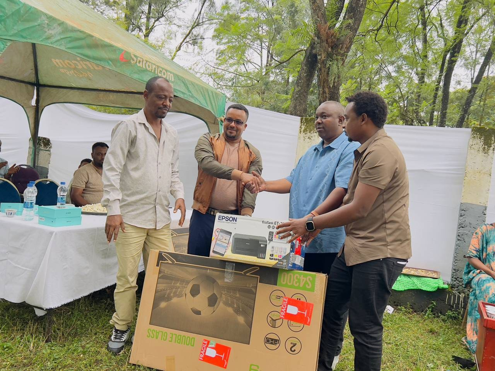

A spark in 2016.
Mr. Elias Abdo established Shinning Star with a focus on events and entertainment.
A company built on creativity, collaboration, and the joy of bringing people together.

Rooted in Ethiopia.
Powered by creativity.
Made for people.
Founded in 2016 by Mr. Elias Abdo, Shinning Star brings events, productions, and entertainment to life. Our work spans exhibitions, concerts, television shows, brand activations, sports tournaments, and more.
Our dedicated team combines skill, imagination, and a customer-focused approach to create experiences that captivate, inspire, and connect communities.
Read our company profile ↗Mr. Elias Abdo established Shinning Star with a focus on events and entertainment.
Modeling shows, exhibitions, bazaars, television, retreats, activations, tournaments, and live music form our creative world.
Our vision is to inspire Ethiopia’s next generation of artists, entrepreneurs, and changemakers.
To be a leading provider of dynamic and impactful events, productions, and entertainment solutions in Ethiopia.
To illuminate Ethiopia’s creative landscape, inspiring the next generation of artists, entrepreneurs, and changemakers.

Creativity grows when communities thrive. Shinning Star donated tablets, televisions, printers, scanners, projectors, and copiers to Agaro TVET College to support students and strengthen educational resources.
Explore our profile and the possibilities for your next event,
production, or brand experience.